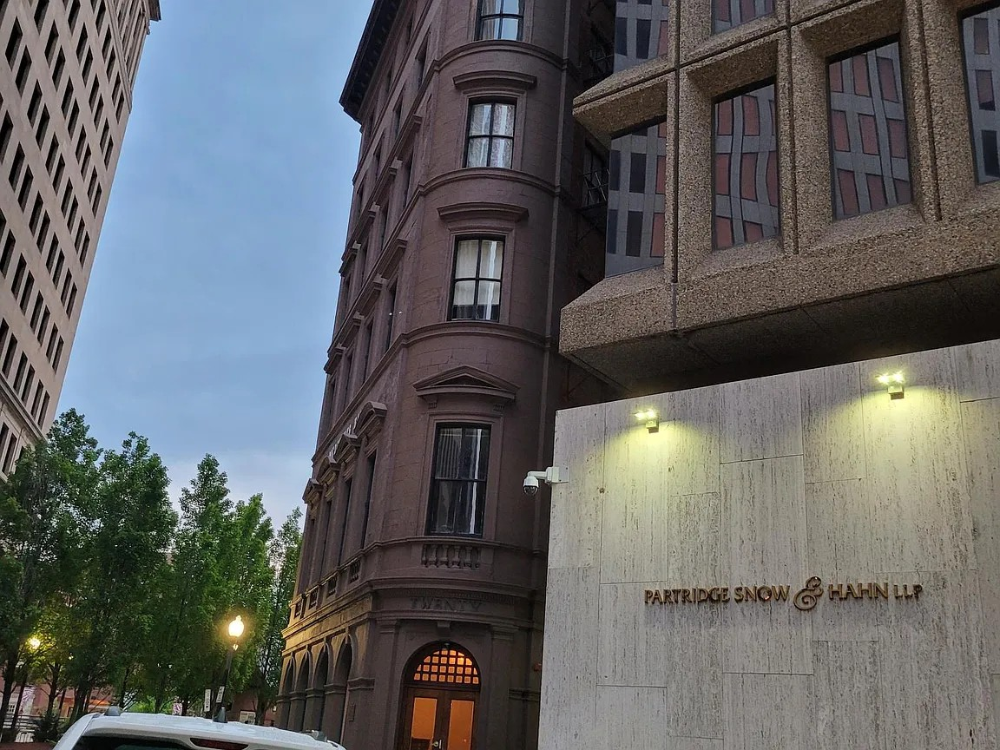

Who is Robert Craven Jr. working for? He's not working for us.
Robert Craven Jr. only moved to North Kingstown to run for State
Representative. Before that, he lived in a Providence apartment.
It's no wonder his campaign is funded by Statehouse lobbyists —
he'll work for them, not for us.

Robert Craven Jr. moved to North Kingstown in 2026 to run for State Representative. When he filed the paperwork for his campaign committee, he listed his address as his father's house. It's no surprise that someone without real ties to our community is funded by Statehouse lobbyists. He's taken money from 52 of them, and you can view the full list for yourself. Those lobbyists include:
- ✗ George Zainyah, lobbyist for the Quonset Sludge Plant.
- ✗ F/S Capitol Consulting, who lobbied against gun control on behalf of a nonprofit funded by gun manufacturers.
- ✗ Bill Murphy, the lobbyist for the exploitive payday loan industry.
- ✗ Advocacy Solutions, the lobbyists for Flock Safety's car-tracking surveillance cameras.